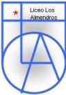

FERIA CIENTÍFICA 2026 · LICEO LOS ALMENDROS
Un selenita tras el conocimiento
Eres un selenita: un habitante de la Luna. Has viajado hasta Marte para rescatar a tus compañeros y buscar el conocimiento de la física newtoniana, junto con otros principios fundamentales de la Física.
Para alcanzar ese conocimiento debes superar cinco etapas: explorar Marte, cruzar el valle de los rovers, ascender por las plataformas, atravesar la base abandonada y vencer al robot guardián.
Al completar toda la aventura se abrirá el archivo de las cinco preguntas. Podrás estudiar sus respuestas y preparar tu explicación de memoria.
UN SOLO PREMIO · NOTA 7,0El desafío ante el profesor
- Supera las cinco etapas en una aventura completa.
- Aprende a explicar las cinco respuestas de memoria, sin leer ni consultar el teléfono o apuntes.
- Ve donde el profesor de Física y di: «Quiero responder las cinco preguntas».
Solo el primer alumno que llegue, anuncie el desafío y responda correctamente las cinco preguntas de memoria podrá obtener inmediatamente una nota 7,0.
El profesor verifica las respuestas y confirma a quién corresponde el premio único.
Cómo recorrer la aventura
Avanzar · Saltar · Agacharse · Disparar. Los cubos «?» esconden premios, los cristales dan puntos y las insignias habilitan disparos temporales desde la tercera etapa. Cada etapa se supera alcanzando su puntaje objetivo; en la quinta también debes vencer al guardián.
La aventura se completa en orden, desde la primera hasta la quinta etapa. Las preguntas solo se revelan al superar todos los desafíos.